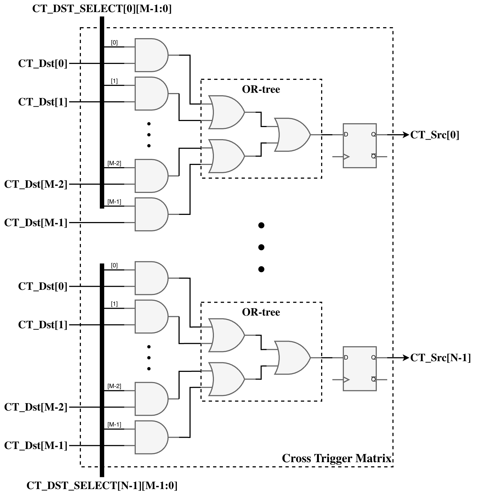

1. Cross Trigger Matrix
1.1. Overview
The Cross Trigger Matrix (CTM) is a crossbar that aggregates and statically routes cross trigger pulses between various sources and sinks. Typical connections to the CTM include Core Logic Analyzers (CLAs) and Cross Trigger Ports (CTPs), including other miscellaneous devices.
The CTM is compatible with CTPs operating in either of the two signaling modes, point-to-point or wire-OR. Typically, each device or logic module connected to the CTM will act as both a source and a sink for cross trigger pulses.
1.2. Configuration Parameters
| Parameter | Range | Default | Description |
|---|---|---|---|
NUM_CTP |
1-32 |
16 |
Number of external Cross Trigger Ports |
NUM_INT_CT |
0-32 |
1 |
Number of internal cross triggers (to CLAs) |
1.3. Architecture
The Cross Trigger Matrix is automatically generated by the generate_ip.py script with a fixed configuration of 26 source ports and 26 destination ports. The matrix implements a combinatorial AND-OR crossbar with registered outputs to route cross-trigger pulses between CTPs and internal cross-trigger sources.

The CTM is programmed at runtime via firmware or debug transactions. Proper configuration of the CTMs in each chiplet will minimize trigger latency and prevent loops in the SiP cross trigger network.
Routing Logic
The CTM routing implements a two-stage combinatorial path followed by output registration. Each of the 26 CT_Src output ports is driven by a dedicated ctm_src_selector module that performs the following operation:
| Stage | Operation |
|---|---|
Selection (AND) |
Each CT_Dst[i] input is AND-gated with its corresponding select bit: |
Aggregation (OR) |
All selected pulses are OR-reduced: |
Registration |
The combinatorial result is registered on |
This architecture allows each CT_Src output to combine pulses from multiple CT_Dst inputs through OR-aggregation. Multiple CT_Src outputs can source from the same CT_Dst input, enabling broadcast distribution. The register stage prevents glitches on the output when configuration changes or when multiple input pulses arrive simultaneously.
Port Indexing
CTM ports are indexed as follows:
| Port Index | Description |
|---|---|
0 to N-1 |
External CTPs (NUM_CTP) |
N to N+M-1 |
Internal CTPs (NUM_INT_CT) |
Where N = NUM_CTP and M = NUM_INT_CT. This indexing is used for CTM ct_dst_i and ct_src_o port assignment and CTM routing configuration registers.
1.4. Interface
Signal Interface
| Signal | Direction | Width | Description |
|---|---|---|---|
clk_i |
Input |
1 |
System clock |
rst_ni |
Input |
1 |
Active-low asynchronous reset |
ct_dst_i |
Input |
N+M |
Cross trigger inputs from CTPs and internal sources |
ct_src_o |
Output |
N+M |
Cross trigger outputs to CTPs and internal sinks |
ct_src_ack_i |
Input |
M |
Acknowledge from internal sinks (for handshake mode) |
ct_dst_ack_o |
Output |
M |
Acknowledge to internal sources (for handshake mode) |
route_cfg_i |
Input |
varies |
Routing configuration per output port |
Where N = NUM_CTP and M = NUM_INT_CT.
Data Ports
The CTM has the following data ports:
-
CT_Src[N-1:0] - Cross trigger pulse output signals from the CTM to CLAs, CTPs, or other cross trigger sinking devices, where N is the number of these cross trigger sinks.
-
CT_Dst[M-1:0] - Cross trigger pulse input signals to the CTM from CLAs, CTPs, or other cross trigger generating devices, where M is the number of these cross trigger sources.